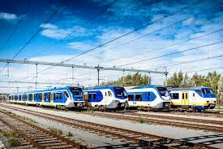
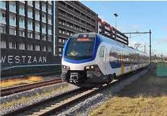
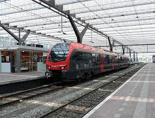

Sprinters
Hier staan alle Sprinters van Nederland, ook sommige van vroeger;


| aantal: | Bouwjaar: |
|---|---|
| 131 | 2007-2012 |
SLT
De Sprinter Lighttrain (SLT) is een type elektrisch treinstel van de Nederlandse Spoorwegen voor sprinterdiensten in Nederland. Er zijn zowel vier- als zesdelige treinstellen, die door hun afwijkende korte baklengte qua lengte vergelijkbaar zijn met oudere typen drie- of vierdelige treinstellen. Met dit moderne materieel wordt tijdens het remmen elektrische stroom aan de bovenleiding teruggeleverd, waarmee andere treinen in de buurt gevoed kunnen worden.
| aantal: | Bouwjaar: |
|---|---|
| 206 | 2017-2019 |
SNG
De Sprinter Nieuwe Generatie (afgekort SNG) is een elektrisch aangedreven type treinstel. Het type is vooral bedoeld om ouder treinmaterieel te vervangen, primair het in 2021 buiten bedrijf gestelde Stadsgewestelijk Materieel. Ook is de aanschaf bedoeld om de verwachte groei van het aantal reizigers op het hoofdrailnet op te vangen.

| aantal: | Bouwjaar: |
|---|---|
| 58 | 2016 |
FLIRT (NS)
De FLIRT is afgeleid van de Stadler GTW, met als belangrijkste verschil dat de aandrijfeenheden zich bij de FLIRT achter de cabines bevinden (i.p.v. in een aparte motorwagen). Dit treintype wordt gekenmerkt door licht en ruimte in het interieur door het gebruik van jacobsdraaistellen gecombineerd met brede open bakovergangen en een lage vloer. De treinen zijn in eerste instantie bedoeld om het materieeltekort en de groei van het aantal reizigers op het hoofdrailnet op te vangen.

| aantal: | Bouwjaar: |
|---|---|
| 6 | 2016 |
FLIRT (R-NET)
De NS R-Net Flirt betreft een serie van zes treinstellen van het type Stadler Flirt 3 van de NS die via dochteronderneming Abellio Rail zijn besteld. De stellen zijn aangeschaft voor inzet op de spoorlijn Gouda - Alphen aan den Rijn. De treinstellen zijn eigendom van NS Reizigers, maar vormen een aparte deelserie, naast de Flirt-stellen voor het Hoofdrailnet.Hier onder staat een verouderde sprinter, die vroeger in nederland heeft gereden;

| aantal: | Bouwjaar: |
|---|---|
| 90 | 1975-1979 |